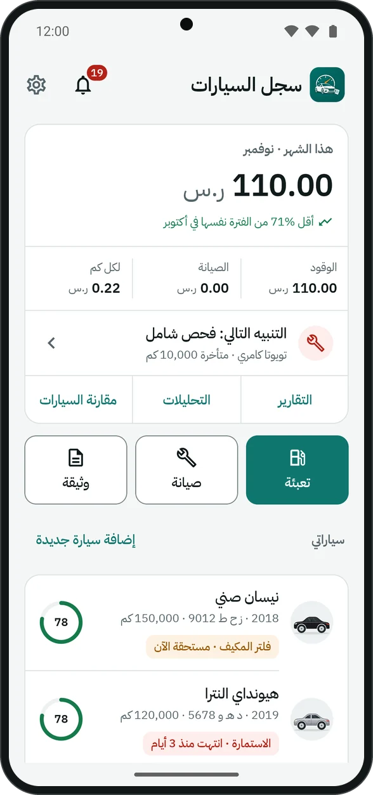
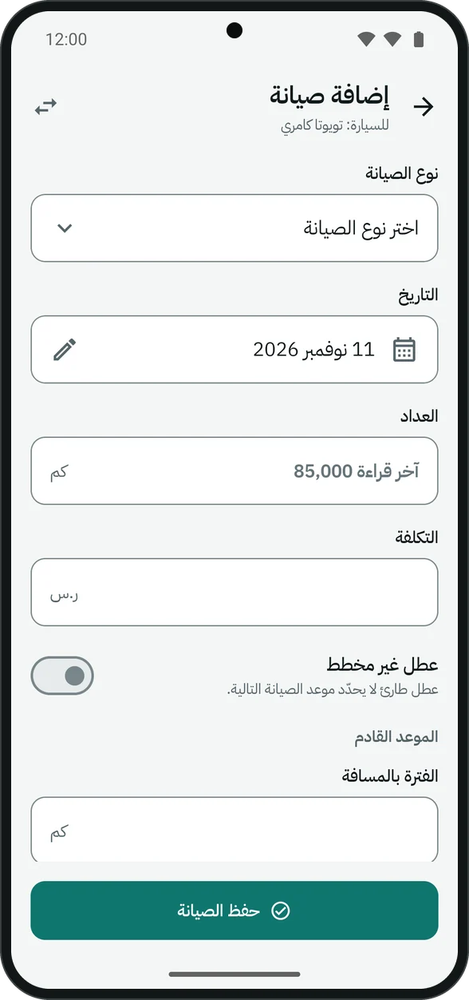
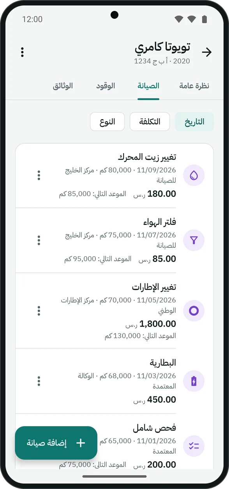
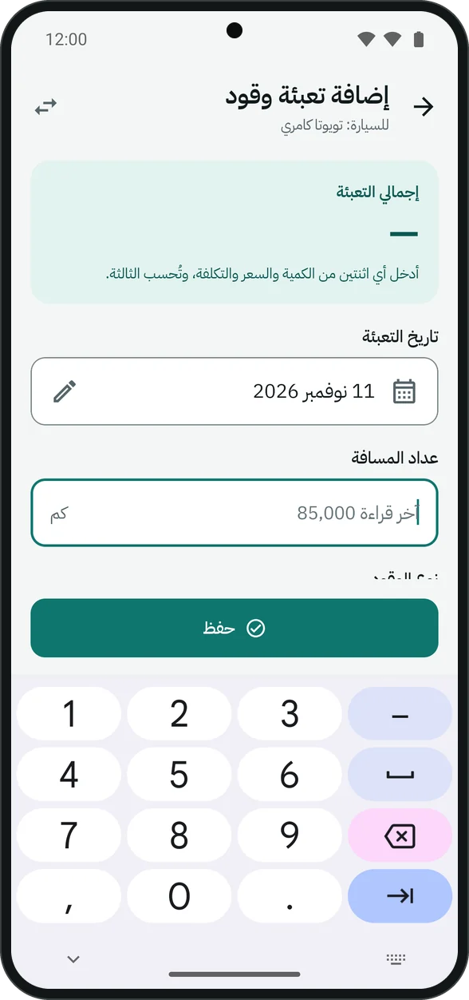
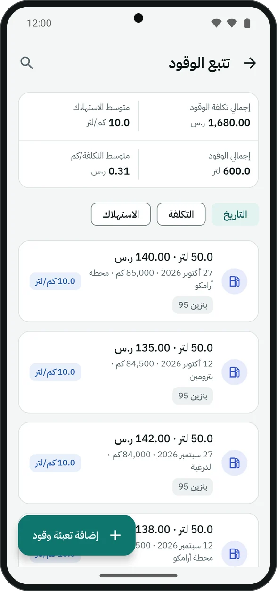
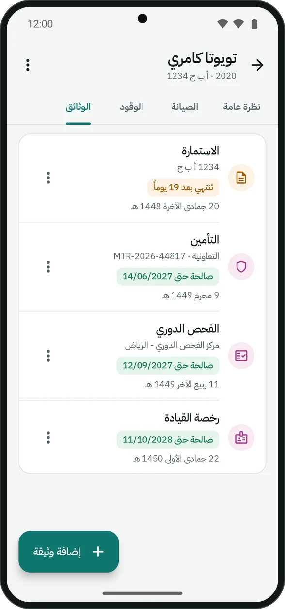
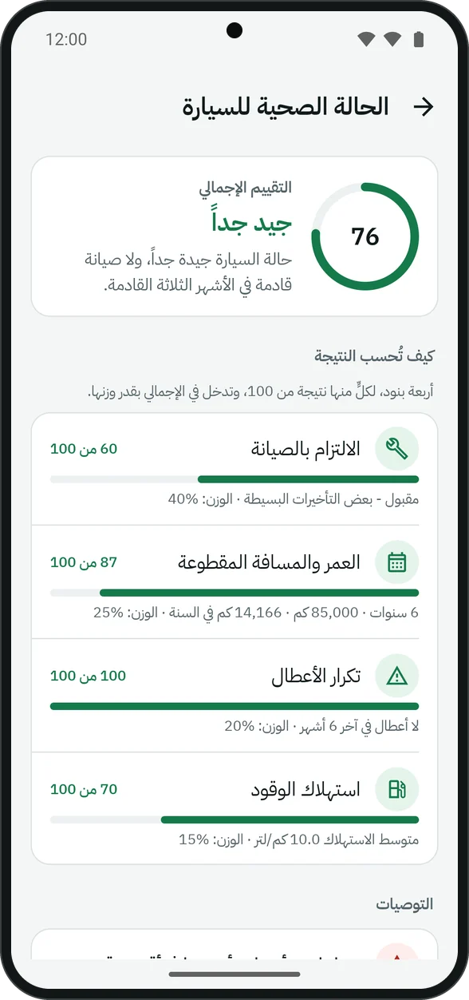
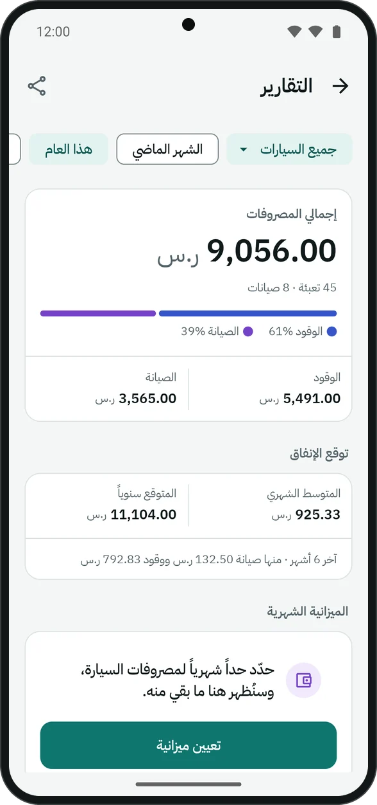
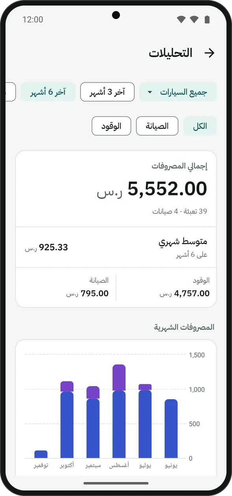
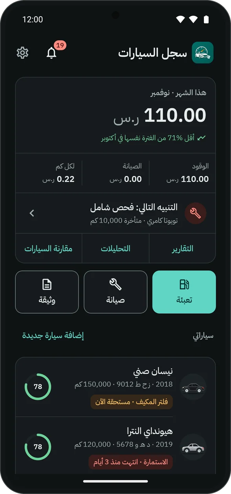

من أول سيارة إلى جوالك القادم.
تسع خطوات، كل واحدة في دقيقة أو أقل. وأسماء الأزرار هنا كما تراها في التطبيق.
أضف سيارتك
- من الرئيسية اضغط «إضافة سيارة جديدة».
- اختر الشركة والطراز، واكتب السنة ورقم اللوحة وقراءة العداد الحالية.
- اختر اللون. والصورة اختيارية: من دونها تظهر السيارة مرسومة بلونها في القائمة.
النسخة المجانية لسيارة واحدة. ومع Premium تضيف ما شئت، ويظهر لكل سيارة في الرئيسية أقرب ما يحتاج انتباهك فيها، ودرجة صحتها.

الصيانة والزيارات
- افتح السيارة، ثم تبويب «الصيانة»، ثم «إضافة صيانة».
- اختر النوع، فتُملأ فترته وحدها، ويظهر لك موعد الصيانة التالية بالكيلومتر والتاريخ.
- اكتب العداد والتكلفة ومركز الخدمة إن أردت، وأرفق صورة الفاتورة.
زيارة بعدة بنود
إن عملت في الورشة أكثر من شيء، فاضغط «إضافة بند» لكل واحد. ثم اختر: «سعر لكل بند»، أو «مبلغ واحد للفاتورة» يُحسب للزيارة كلها ولا يُقسَّم على البنود.
العطل الطارئ
فعّل «عطل غير مخطط» للإصلاح الذي لم يكن في موعده. لا يحدّد موعد الصيانة التالية، ويظهر تكراره في صحة السيارة.
فترات سيارتك
من قائمة السيارة ⋮ ← «فترات الصيانة» تعدّل فترة كل نوع لهذه السيارة وحدها، إن كان كتيّب الوكالة يقول غير الفترة المعتادة.


تعبئة الوقود
تصل إلى نموذج التعبئة من ثلاثة أماكن: زر «تعبئة» في الرئيسية، أو ضغطة مطوّلة على أيقونة التطبيق ثم «إضافة تعبئة وقود»، أو زر التعبئة في الـ widget.
- العداد يبدأ من آخر قراءة، فتكتب الجديدة فقط.
- من الكمية والسعر والتكلفة، أدخل اثنين ويُحسب الثالث.
- اترك «تعبئة كاملة» مفعّلاً إن ملأت الخزان، فالاستهلاك يُحسب بين تعبئتين كاملتين.


الوثائق
- افتح السيارة، ثم تبويب «الوثائق».
- تظهر لك الوثائق الجاهزة: الاستمارة والفحص الدوري والتأمين. اضغط إحداها لتضيفها، أو «إضافة وثيقة» لغيرها.
- يكفي تاريخ الانتهاء. ورقم الوثيقة وجهة الإصدار وتكلفتها اختيارية.
تريد التاريخ بالهجري؟ اضغط «إدخال بالهجري». ويظهر كل تاريخ بالتقويمين.
التذكير قبل الانتهاء بـ 30 يوماً، ثم بـ 7 أيام. وتختار الوثائق الجاهزة من الإعدادات ← «الوثائق الجاهزة»، ومنها رخصة القيادة إن أردتها.

التنبيهات وصحة السيارة
في الرئيسية «التنبيه التالي»، وتحت كل سيارة أقرب ما يحتاج انتباهك فيها. وكل التنبيهات في «الإشعارات» (الجرس في الأعلى)، داخل التطبيق وحده.
اضغط حلقة الصحة في صفحة السيارة لترى كيف حُسبت: الالتزام بالصيانة، والعمر والمسافة المقطوعة، وتكرار الأعطال، واستهلاك الوقود، ووزن كل منها في الدرجة. وتحتها توصيات بما تفعله.

التقارير والتحليلات
من الرئيسية: «التقارير» للإنفاق حسب النوع والشهر والسنة، والمتوسط الشهري، والميزانية الشهرية التي تضعها. و«التحليلات» لتكلفة الكيلومتر واتجاه الاستهلاك.
«مقارنة السيارات» Premium تضع سياراتك جنباً إلى جنب في الصحة والتكاليف والاستهلاك. وتقارير PDF Premium تجمع سجل السيارة في ملف واحد.


النسخ الاحتياطي وجوالك الجديد
- الإعدادات ← «النسخ الاحتياطي والاستعادة» ← «إنشاء نسخة احتياطية».
- يمكنك حمايتها بكلمة مرور: تُشفَّر عندها السجلات والصور، ولا تُستعاد إلا بها. فاحفظ كلمة المرور في مكان آمن.
- تُحفظ النسخة في مجلد
Download/carLogBackupعلى جوالك (وفي مجلد التطبيق على Android 9 وما قبله)، ويمكنك مشاركتها أو إرسالها لنفسك. - في الجوال الجديد: ثبّت CarLog، ثم «النسخ الاحتياطي والاستعادة» ← «استعادة من ملف».
ومع Premium: «نسخ احتياطي تلقائي» كل أسبوع، ويحتفظ بآخر خمس نسخ.
الاستيراد والتصدير
استيراد التعبئات
الإعدادات ← «النسخ الاحتياطي والاستعادة» ← «استيراد من CSV». يقبل تصدير Fuelio وDrivvo، وأي جدول بيانات فيه التاريخ والعداد والكمية، وملف CSV من CarLog نفسه. تراجع التعبئات قبل حفظها، ويخبرك بالأسطر التي لم يقرأها ولماذا.
تصدير CSV
من قائمة السيارة ⋮ ← «تصدير CSV»: الصيانة، أو الوقود، أو الوثائق، في ملف يفتح في أي جدول بيانات. مجاناً.
الإعدادات
- اللغة: العربية والإنجليزية والفرنسية والبرتغالية والتركية والماليزية.
- العملة: 19 عملة. تُختار أول مرة حسب بلد جوالك، وتبقى كما هي إن غيّرت اللغة.
- وحدة المسافة: الكيلومتر واللتر، أو الميل والجالون.
- الوضع الداكن: فاتح، أو داكن، أو حسب الجوال.
- قفل التطبيق: بالبصمة أو بقفل الشاشة، ويعود القفل بعد دقيقة في الخلفية.
